GainPath
Workout tracker
Body stats
Helps personalise your starting weights
Leave blank if unknown — we'll estimate from your other stats
Strength baseline
Enter the heaviest weight you've recently done for any reps. Skip if you're new.
All fields optional — leave blank to skip
Training profile
Tailors your split and starting weights
Training frequency
How many days per week do you plan to train?
Choose your split
Session preferences
Customise how your sessions run
Same weight and reps across every work set — change the first set's weight and the rest follow.
Warm-up sets
First exercise per muscle group
Your gym
Optional — tap what you actually have and GainPath will only ever suggest weights you can really load. Skip it and it assumes a fully stocked gym.
Plates owned (kg, per pair)
Dumbbells owned (kg, per hand)
Last workout
How long ago was your last workout?
Starting weights
How should GainPath determine your starting weights?
Your setup summary
GainPath
Week streak
0
Start your streak
0/0 this week
Drag to reorder · tap to edit sets/reps/weight · swipe right to swap · swipe left to delete
Custom program
Build your own training days from scratch. Name each day, then tap the list icon to add exercises (supersets, sets, reps and weights all work the same as any day).
Training days
Swap exercise
Add custom exercise
For a machine or movement your gym has that isn't in the built-in list. No bundled image — it'll link out to a YouTube search instead.
Timed hold
Measured in seconds held, not reps (e.g. plank)
Your custom exercises
Settings
Profile
Preferences
Warm-up sets
Rest timer sound & vibration
Keep screen awake mid-workout
Stops your phone locking between sets
My gym
Tap what you actually have — the plate calculator and weight suggestions will only use combinations you can really load. Leave everything off to skip this (unrestricted, standard-gym assumption).
Plates owned (kg, per pair)
Dumbbells owned (kg, per hand)
Machine base weights
The weight of each machine's frame, added to the plates you load to get the total. You're asked once, the first time you use a machine — fix it here if you got it wrong.
Planned rest
Sick, traveling, or taking a deload week? Mark it so your streak pauses instead of resetting to zero.
Apple Watch sync
GainPath is a web app and can't write to Health directly — but it can trigger a Shortcut you build once, which starts/ends a "Traditional Strength Training" workout on your Watch automatically, so you never touch the Watch by hand. Calories still come from the Watch's own sensors.
Sync workouts to Apple Watch
Native app updates
Want to hear when the native iOS/Android app ships? Leave your email below — completely optional, GainPath works fully without it, and no account is ever required to use the app.
Reports & backup
Monthly PDF report
Graphical summary — sessions, streak, strength gains, new PRs
Backup & restore
Keep your data safe or move to another device
How GainPath works
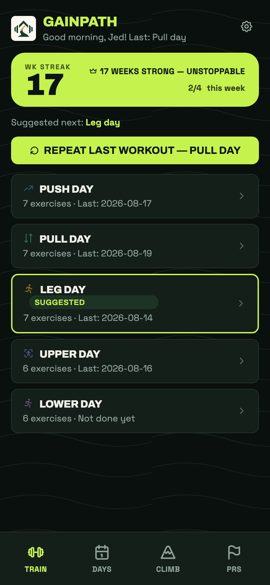
1
Pick a day
Tap any day to start — GainPath pre-fills weights from last time you did it.
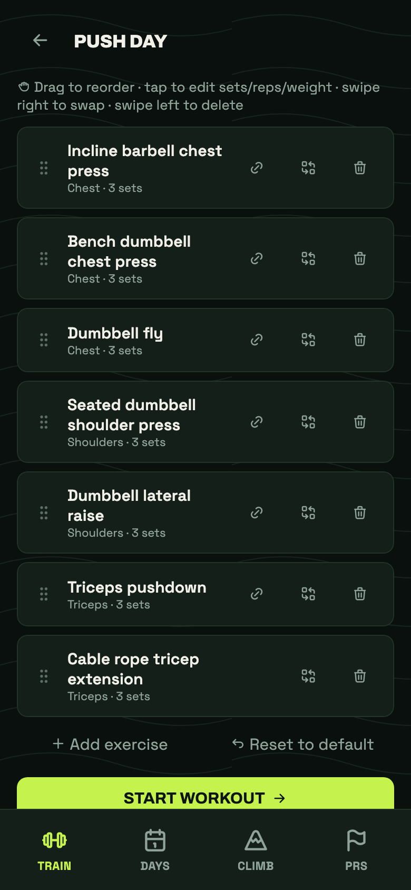
2
Customize any day
Reorder, swap, add, or delete exercises — link two together for a superset, or swipe left to delete.
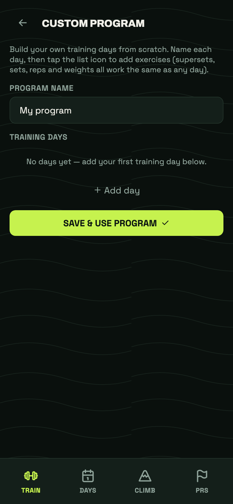
3
Build your own program
Not locked into the built-in splits — name your program and add your own training days from scratch.
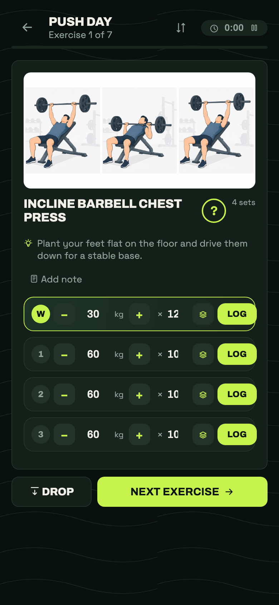
4
Log each set
Enter the weight and reps, tap LOG, then rest with the built-in timer. GainPath catches new personal records automatically.
5
Add or drop a set
Tap the bin on any set you haven't logged yet to drop it, or Add set to tack one on.
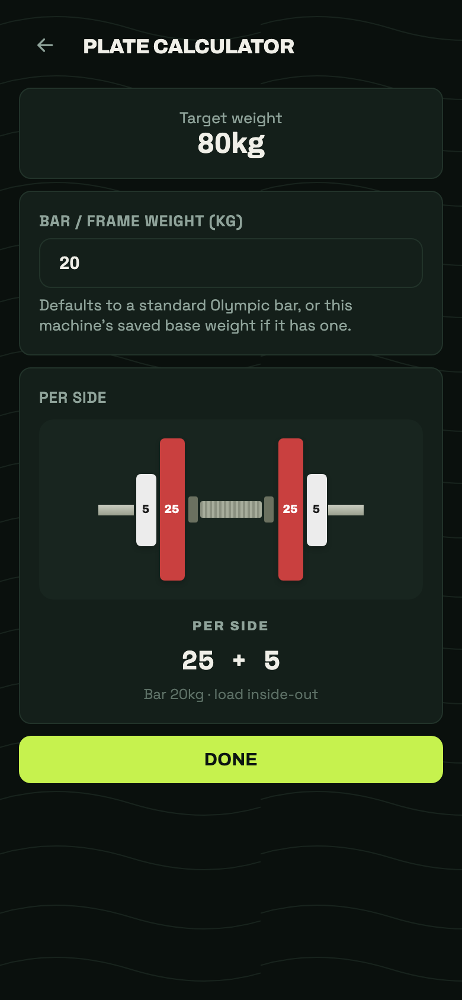
6
Calculate your plates
Tap the plate icon next to any weight to see exactly which plates to load per side.
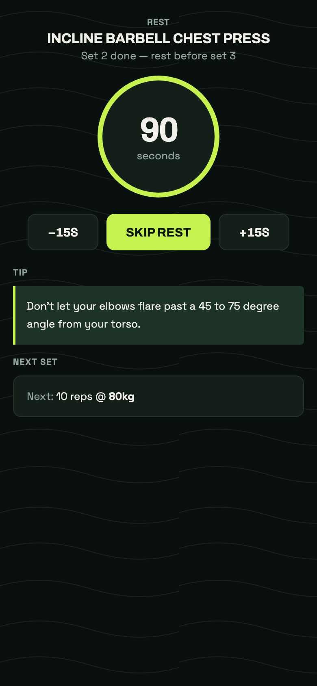
7
Rest, with tips
The timer counts down automatically between sets, with a form tip and a preview of what's next.
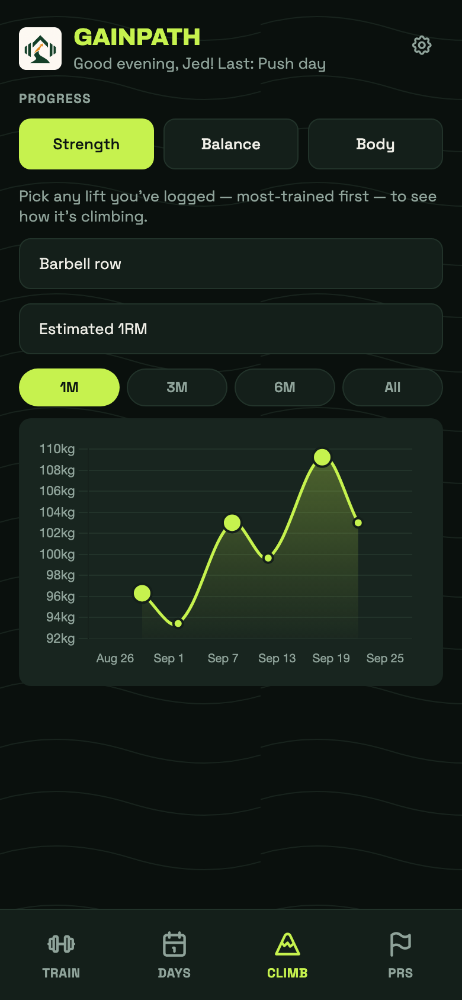
8
Track your progress
Tap here anytime to see your strength climb over time.
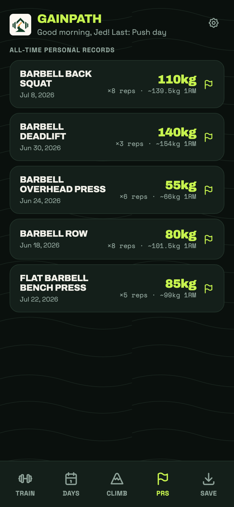
9
Celebrate your PRs
New PRs are tracked automatically — tap here to see your full list.
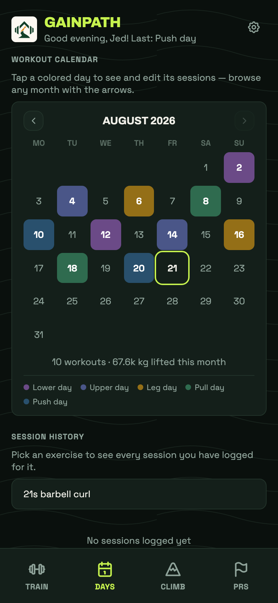
10
Browse your calendar
Every session, color-coded by type — tap a day to review or edit it.
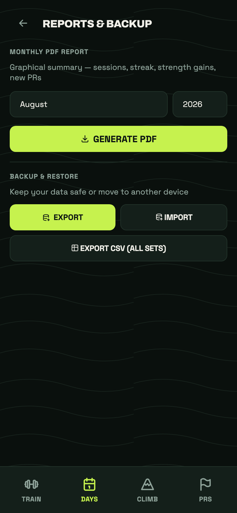
11
Reports & backups
Generate a monthly PDF report, or back up your data as JSON or CSV — under Settings → Reports & backup.
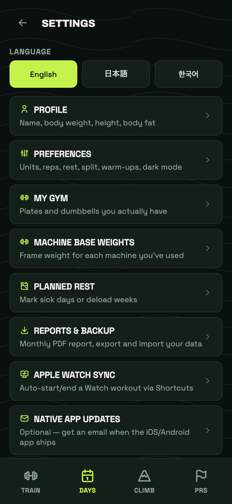
12
Make it yours
Settings is where you tell GainPath which plates/dumbbells you have, connect Apple Watch and send feedback. No account needed, ever.
Fix a mis-logged weight or reps, or delete the session. PRs recalculate automatically.
Send feedback
0:00
Rest
90
seconds
Tip
Next set
Machine base weight
Weight of the machine itself without any plates. Only asked once — saved permanently.
Plate calculator
Target weight
Defaults to a standard Olympic bar, or this machine's saved base weight if it has one.
Per side
First time — set your weight
Enter the weight you want to start with. It defaults to your last logged weight from your next session onwards.
On your last set, how many reps could you still have done?
How did it feel overall?
Helps track how this session went
Session done!
Duration
Volume
Exercises
Sets done